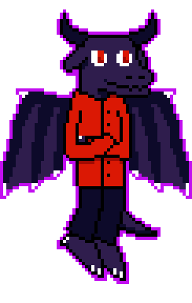
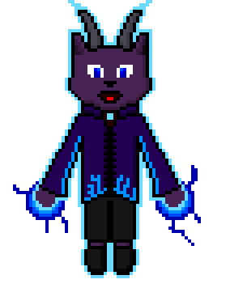
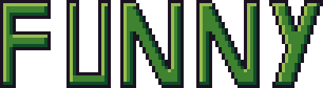
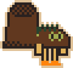

Mis sprites para los lospec dailies | My sprites for lospec dailies
Algunas veces se me da por hacer los lospec dailies, para practicar pixelart porque soy horrible con los graficos.
fecha/date | tema/theme | paleta/palette
23/5/2021 | #Wings | Fury
Primer intento de dragon, cruzado de brazos y batiendo las alas. Miren que lo hice humanoide porque si lo hacia normal podia llegar a provocar la quinta guerra mundial.
Firts attempt to draw a dragon, with crossed arms and moving the wings.
23/5/2021 | #Mystical | Uzebox
Un gato con cuernos flotante, con bolas de energia en las manos. No salio demasiado "mistico", pero quedo bastante bien :)
A floating hat with horns, holding energy balls on their hands. Ist too "mystical", but i like it :)
23/5/2021 | #Funny | Goblin18
No se me ocurrio nada. XD
I couldn't think of anything. XD
23/5/2021 | #Shoe | Organic Christmas 8
Mi primer intento en hacer un sprite pal daily de lospec. Basicamente son zapatos con cara y patas, lel
My first attempt on making a sprite for lospec dailies. Basically are shoes with face and legs, lel